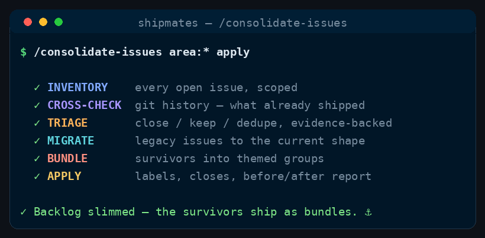

Command
/consolidate-issues
inventory → cross-check history → close → migrate → bundle
Review every open issue against git history, close what's already done or stale, migrate the legacy ones, slim the backlog, and bundle the survivors into themed groups so similar work ships together efficiently. Read-only by default — it reports; changes happen only on an explicit apply.
See it run

/consolidate-issues runs, in order.How to run it
Run it in your harness
/consolidate-issues [scope filter such as label/area] [apply] — no args: the whole open backlog, report-only<angle brackets> = required · [square brackets] = optional
Step by step
The stages
Six stages, in order.
Cost discipline
- Stable workflow instructions come before runtime input. Read and parse the complete runtime-input section at the end before acting; do not weave volatile issue text, arguments, diffs, or generated output through this prefix.
- Spend subagent seats only where their decision can change the outcome. Route model and effort at spawn by work difficulty; never hardcode a model in canonical content.
- Ask every subagent for a compact structured return: decision/status first, criterion findings and minimal evidence, then blockers, changed files with one-line rationale, and next action as relevant. Return decisions, not transcripts or raw logs.
Turn a drifting issue tracker back into a plan. The whole open-issue set is pulled, every issue is checked against the project's git history and merged PRs to see what is already done, the done and stale ones are closed, legacy-shaped issues are migrated to the tracker's current conventions, and the survivors are bundled by theme into groups each big enough to hand to /ship-issue in one pass — so the backlog shrinks and the work that remains ships in coherent chunks instead of as an endless one-issue-at-a-time trickle.
The scope and the go-ahead to change anything come from the Runtime input section at the end of this workflow.
-
Stage 0 — Inventory (orchestrator)
- Pull the entire open-issue set:
gh issue list --state open --limit 1000withnumber,title,labels,milestone,assignees,createdAt,updatedAtand the body for each. Also pullgh label listand the project'sREADME/AGENTS.md(conventions, quality bar, where work is tracked) so triage uses the project's own standards. - Apply
SCOPEif set; otherwise take the full set. - Snapshot the baseline count and, per issue, its age, last activity, labels, and milestone. These numbers feed the report; record them before anything is touched.
- Pull the entire open-issue set:
-
Stage 1 — Cross-check against git history (orchestrator, evidence first)
For every issue in scope, gather the evidence before any verdict:
- Merged work:
git log <base> --onelineplusgh pr list --state mergedandgh pr list --state closed— search titles, descriptions, and linked references for the issue's subject and keywords. A merged PR whose body references the issue is the strongest signal. - Open work: is an open PR or a live branch already addressing it?
gh pr list --state openplusgit branch -a— inspect branch names and PR titles/descriptions for the subject. - Freshness: last-comment and last-update dates, plus the issue's label/milestone state.
Record, per issue, the evidence string (the refs, PRs, commits, or activity you found). Nothing is judged on title-matching alone; every verdict names its evidence.
- Merged work:
-
Stage 2 — Triage verdicts
Crew:
product-manager(orchestrator deterministic + ONE pass)First the orchestrator applies the hard, mechanical rules (no judgment needed):
DONE— evidence shows the change shipped (a merged PR/commit implements it). Close with a comment naming the implementing PR/commit.STALE— no activity and no signal it's still wanted: older than the project's stale horizon, no assignee, no linked PR/branch, and the subject is fully superseded by something that shipped. Don't guess at these alone — send them to theproduct-managerreview pass.
Then spawn ONE
product-managerwith the remaining borderline set: theDONE-adjacent, theSTALE-candidates, and the clearly duplicate-looking pairs. It returns structured verdicts only (noghcalls): per issue a verdict ofclose/keep/migratewith a one-line reason, plus a dedupe map (issue → canonical issue) only where the overlap is unmistakable. It never closes anything itself.The orchestrator merges the two: mechanical rules are final; the subagent's judgment calls are adopted as its recommendation, and every recommendation the user would want to veto is surfaced prominently in the report.
-
Stage 3 — Migrate the legacy (orchestrator)
MIGRATEapplies to issues whose shape is obsolete even though the work is still wanted:- wrong tracker conventions (missing labels/structure the project now requires, body not in the current template, no acceptance criteria where the project mandates them),
- issues that should be an epic with stories, or a story inside an existing epic (
Part of #…), - issues blocked by a fixed/unneeded parent (remove the stale
Blocked byor dependency note).
Migrating means rewriting to the project's current shape — never inventing new scope. If a migration would silently change the meaning, keep it and flag it for the user instead.
-
Stage 4 — Bundle the survivors
Crew:
product-manager(ONE , parallel by area)Group every
keepissue into bundles: coherent themes, each sized for a single/ship-issuerun. Spawn oneproduct-managerper area (from the project's existing area labels) so the theming runs in parallel; give each its area's issues, the repo context, and the rule that bundles are thematic + dependency-ordered + individually shippable — never a grab-bag of unrelated tickets. Each returns structured bundle proposals:name,theme(one line),issues(numbers),order(build sequence within the bundle), and a suggested label. Orphan issues that fit no theme stay as singletons — don't force them in.The orchestrator dedupes the proposals, resolves cross-area overlaps (an issue can belong to only one bundle), and assigns each bundle a
bundle:<name>label. -
Stage 5 — Apply (only in
applymode) and reportIf
MODE=report: print the full plan and STOP — the verdict table, the dedupe map, the bundle tree with its labels, and the proposed closes/migrations. Change nothing.If
MODE=apply, execute in this order, re-verifying each before acting:- Labels — create any missing
bundle:<name>labels. - Migrate — rewrite the flagged legacy issues to the current shape (with the
TRAILER). - Close — close each
DONEandSTALEissue with a comment naming its evidence; on a dedupe, comment the canonical issue and cross-link the pair. - Tag bundles — apply each bundle's label to its issues and note the bundle in a comment, so
/ship-issuecan be run per bundle.
Then verify (re-fetch and grep; don't assume): every planned close happened, every migration landed, every bundle label is on exactly its issue set. Report the before/after: how many issues were in scope, how many closed (with the count that were already done), how many migrated, and the bundle tree ready to hand to
/ship-issue— one bundle at a time. - Labels — create any missing
Runtime input
$ARGUMENTS is the complete invocation text. Empty means the whole open-issue set: run in MODE=report over the repo's entire backlog — every open issue, no scope filter. Otherwise the first word is usually a scope filter (a label or area) or the word apply; parse it in prose and treat anything unstated as MODE=report. When in doubt, report only — closing other people's issues is a decision the captain makes, not the default.
Guardrails
- Evidence or nothing. An issue is
DONEonly with a merged PR/commit to point at; it isSTALEonly after theproduct-managerpass. Every close comment names the evidence. - The orchestrator owns all
gh/git.product-managersubagents only return structured verdicts and bundles — they never close, migrate, or edit issues themselves. - Never lose intent. Migrating preserves the issue's substance; a migration that would change meaning is reported, not performed. Dedupe only on unmistakable overlap, and always cross-link.
- Don't over-close or over-bundle. A
STALEverdict with any live signal goes to the user. Bundles are thematic and shippable — never arbitrary groupings to make the count look better. - Respect
MODE. Inreportmode, the tracker is never modified, not even a label. - If a role doesn't resolve to its installed role file, fall back to
general-purposewith the product-manager brief inlined, and note the fallback.
Config
MODE=report(default) — read-only: inventory, cross-check, triage, bundle. It changes nothing on the tracker.apply— do the work, only with an explicit request: close the evidence-backed ones, migrate the legacy ones, add the bundle labels. When ambiguous, default toreportand state which mode you ran.SCOPE= optional narrowing of the triage — a label or comma-separated labels, an area, an owner, or an age/activity filter. Empty means the entire open-issue set.TRAILER= the session's required session/author trailer line, read from context; never invent one. Every comment or edit you write carries it.REVIEWER=product-manager— the only role this workflow spawns; everything else is the orchestrator reading the tracker and the repo directly.
Where this lives
This page is generated from commands/consolidate-issues.md. The installer copies it to ~/.claude/skills/consolidate-issues/SKILL.md for every project, or .claude/skills/consolidate-issues/SKILL.md inside a single repo.